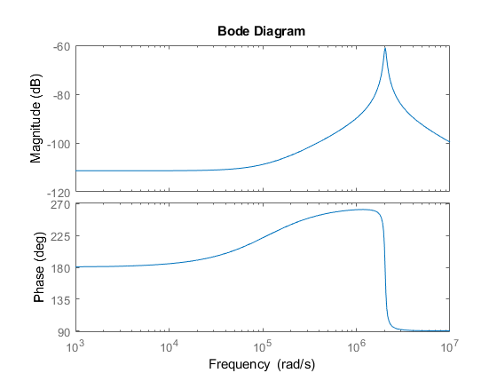

TensionNominale = 12; %V VitesseLimite = 11000*pi/30; %tr/min à radian par seconde Puissance = 26; % W CourantMaxPermanent = 1.5; %A CoupleNominal = 24.4; % m.Nm RendementMaximum = 83.2; % en % R = 1.34; % Résistance aux bornes en Ω Rtilde = R; L = 0.12*10^-4; %Inductance aux bornes en H (conversion mH en H) Ke = 30/pi*585; % conversion tr-1/min/V en V.s.rad-1 Kv = 1/Ke; Kc = 1.63*10^-2; % m/Nm/A-1 en N.m.A-1 Tau = 4.63; % m/s Jm = 9.19*10^-7; % g/cm2 en kg/m² J = 2*Jm; % g/cm2 en kg/m² x = 36; Ko = 0.5*18/pi; % V/10˚ ==> Converti Komega = pi*1.75/(30*10^3); % conversion mV/[tr/min] en Volts par radian par seconde Cr0 = 10^-3; %Nm Cr1_t = Cr0; %Nm Cr2_t = Cr0; %Nm f = 10^-6; %Nm/rad.s %f = 0; Rc = 0; % % Définir la fonction de transfert % num = [Komega*Kc]; % Coefficients du numérateur % den = [J*L, J*R, Ke*Kc]; % Coefficients du dénominateur % sys = tf(num, den) % Créer l'objet fonction de transfert % % % Calculer les pôles de la fonction de transfert % p = pole(sys); % Trouver les pôles % % % Afficher les pôles % disp('Les pôles de la fonction de transfert sont :') % disp(p) % % zplane(num, den); % Tracer les pôles % title('Evolution des pôles dans le plan complexe'); H = tf([-Komega/J,(-Komega*R)/(J*L)],[1,R/L,(Kc*Ke)/(J*L)]); bode(H) %FT = (Komega*Kc)/(
